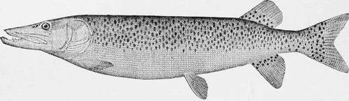

The Mascalonge. Continued
Description
This section is from the book "American Game Fishes", by W. A. Perry. Also available from Amazon: American Game Fishes: Their Habits, Habitat, and Peculiarities; How, When, and Where to Angle for Them.
The Mascalonge. Continued
In the Pike or northern Pickerel, the sides of old and young are always covered with oval whitish or yellowish spots, always lighter than the ground color, which is usually grayish or olivaceous.
In 1820, Rafinesque mentioned two Pikes as existing in the Ohio and Mississippi basins (Esox vittatus and Esox sal-moneus), growing to a length of from three to five feet, and though his descriptions are very imperfect, almost worthless in fact, I am confident that he had in mind the Mascalonge, which was more plentiful there at that time than now.
The Mascalonge, like all of the Pike family, is a typically piscivorous fish, its large mouth, jaws and tongue being armed with a terrible array of long, sharp and conical teeth of various sizes, forming veritable chevaux-de-frise from which there is no escape for the unlucky fish that is so unfortunate as to be seized by the cruel and relentless jaws.
Like all animals of prey, the Mascalonge is solitary in its habits, lying concealed among the water-plants and bull-rushes at the edges of the streams or channels, or along the shores; and woe to the luckless fish that passes within sight of the fierce marauder, for its doom is sealed when this freshwater shark rushes open-mouthed upon its victim with a speed and force as though hurled from a catapult.
Mascalonge. Lncius Masquinongy.
The number of fishes destroyed by a Mascalonge during a summer is almost incredible; and they are not small fry and young fishes, such as are devoured by other predacious fishes, but those that have escaped the many dangers and vicissitudes of adolescence, and have arrived at an age when they are capable of reproducing their kind.
It is indeed fortunate for the rest of the finny tribe that the Mascalonge is comparatively a rare fish. The Mascalonge, like others of the pike family, breeds in the spring, later however than the Pike or Pickerel. All of the pike species resort to overflowed marshes and shallow, grassy streams to spawn-the Pickerel during March and the Mascalonge in May.
The Pickerel thus has a start of about two months, and no doubt the young Pickerel devour most of the Mascalonge that hatch, for the spawn in May, in such shallow water, is exposed to the ravages of turtles, frogs, ducks and coots, and most of it is doubtless destroyed. This seems to be a wise pro* vision of nature, for as the Mascalonge spawns from 100,000 to 300,000 eggs, according to size, the result can be imagined were the same proportion of eggs to hatch and reach maturity as in the case of most other fishes.
In comparison with the rest of its family the Mascalonge is a valuable food-fish, though, as already intimated, it is much overrated, and is inferior to the White-fish, Lake Trout, Black Bass or Brook Trout for the table. It is, however, readily disposed of in the markets, and while possessing no special or characteristic flavor, its flesh is firm and flaky, and is much admired by many, but-chacun a sou gout.
Likewise as a game-fish the Mascalonge is far superior to the rest of its family, and when upward of ten pounds its great vitality, weight and power give it an endurance that is highly extolled by some, but it can hardly be compared to the Salmon, Black Bass, or Brook Trout for pure gameness, per se; that is, it does not exhibit the finesse and elan of those superb game-fishes.
A large fish may swim with a hook in its mouth for a week, but that is merely an evidence of endurance, not of gameness. And as a large Mascalonge is frequently hooked by an angler on a light rod, and the angler, being awed by the weight of the fish and its fierce rushes, is afraid to give it the full spring and power of the rod but gives line instead, and consequently plays it in a timid, half-hearted manner for an hour, or maybe two or three hours, until finally after both fish and man are exhausted, the one is gaffed and the other has just breath enough to exclaim that the Mascalonge is the "king of game-fishes."
As a matter of fact, with suitable tackle, any fish should be brought to gaff or net in a minute to the pound-that is, a five-pound fish within five minutes, a ten-pound fish within ten minutes, or a thirty-pound fish within a half-hour.
I once killed a St. Lawrence Mascalonge of thirty-two pounds in twenty minutes with an eight-ounce Henshall Black-Bass rod, and gaffed it fairly. A very expert and accomplished lady angler, the charming wife of the late Surgeon General Baxter, killed several fresh-run Salmon, on the Restigouche during the summer of 1886 (I was there the same season), that weighed from twenty-five to thirty-five pounds each, and brought each fish to gaff in from twenty to thirty minutes. And, really, ten minutes is a long time to play a fish--to many it seems an hour.
Most Mascalonge, however, are taken with hand-line and trolling-spoon, and hauled in hand-over-hand. With a taut line and moving boat the Mascalonge sometimes leaps above the water, because it cannot get very far beneath the surface; as a rule, however, and when on the rod, it does not leave the water, and will not leap unless forced to do so, but will endeavor to keep near the bottom, or to reach the cover of weeds or rushes.
With proper tackle the Mascalonge affords good sport, for being a powerful fish it requires much skill and judgment on the part of the angler to keep it away from the moss and grass of the bottom, or from the weeds and alga of the shore, and to successfully bring it to gaff within a reasonable time.
The rod should be a good one of split-bamboo, or of ash and lance-wood, and should weigh not more than ten, or at the most twelve ounces, and should not exceed nine feet in length. A first-class multiplying reel is indispensable, with seventy-five yards of plaited silk line, No. 3, or letter E. The hook should be a Sproat or an O'shaughnessy, No. 3-0 to 5-0, and tied on a gimp snell. The best bait is a large live minnow, or frog, either for casting or trolling, though for the latter mode of fishing a large trolling-spoon with a single hook may be used.
Rowing slowly and cautiously along some twenty or thirty yards outside of the weed-patches, the bait should be cast to the edge of the weeds, reeling it in again very slowdy, or if the bait is alive it may be permitted to swim, just outside of the weeds, for several seconds or a half-minute before reeling. By moving along and making frequent casts the angler's chances are much better than in still-fishing; or the bait, or a spoon may be trolled along the edges of the water-plants from a moving boat. The Mascalonge bites very savagely, and should be hooked at once, before he has time to take to his lair among the weeds.
When a fish is hooked the boatman should pull at once for deep water, that is, away from the weeds, and he should be ready at all times to favor the angler in playing the fish by careful and judicious management of the boat. When the fish is brought alongside, the gaff should be passed under the fish, slowly and deliberately, avoiding all sudden and energetic movements, and then by a quick upward and drawing motion the fish should be gaffed in the throat or breast, taken into the boat, and killed by a smart stroke on the head.
These instructions apply to the Mascalonge of northern waters, where it resorts to weedy lakes and streams; but in the Ohio and its tributaries the Mascalonge is found in the summer and autumn in the deepest holes of the streams, and they are then taken by still-fishing, the bait being usually suckers of a half-pound or more in weight. After taking the bait, the fish is given time to gorge it before striking or hooking.
It is now, however, a rare occurrence to take a "Pike," as it is called, in these waters; and the fact is talked of long afterward, and the head preserved as a trophy, while the fish itself, being esteemed a great delicacy on account of its great size and rarity, is made the piece de resistance of a formal dinner, instead of being preserved for a piece justificative. For five years I have endeavored to procure a specimen of this rare fish in the Ohio basin, but, beyond the head, my efforts have so far failed. No one who is so fortunate as to capture a "Pike" seems willing to part with it for love of science or coin of the realm.
By UK. James A. Henshall.
Continue to: